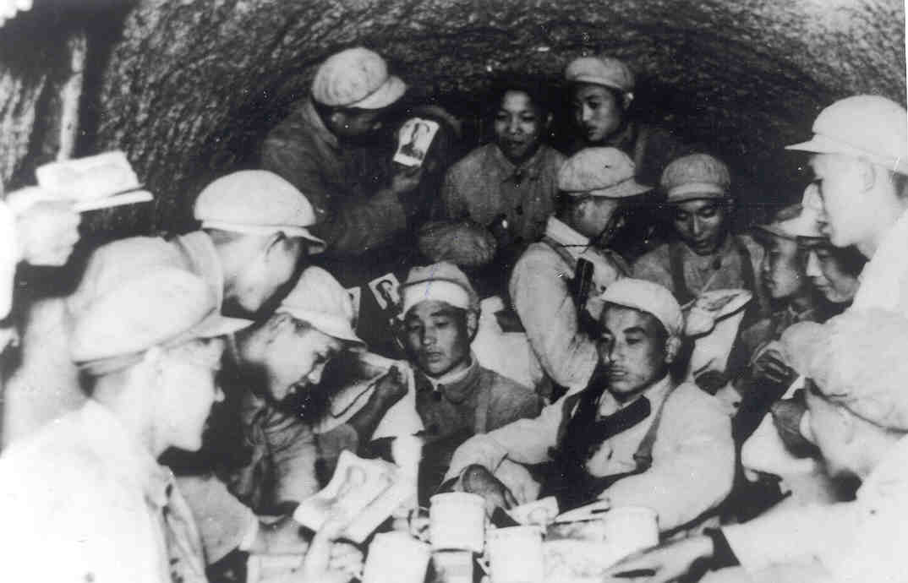

上甘岭战役
没有一个地方比“上甘岭”更让中国人念念不忘，因为没有一场战役比“上甘岭战役”更能诠释中国人的民族精神。

1952年10月14日凌晨3时半，阵地防御战阶段空前惨烈的一场大战打响了。范弗里特计划用一天时间夺下五圣山前 的2个小山包——597.9和537.7北山高地。这2个高地背后的洼地里有一个十几户人家的小山村，叫做上甘岭，这场战役我 方叫做“上甘岭战役”，美方称之为“三角形山战役”。美军320多门重炮，27辆坦克以每秒钟6发的火力密度将钢铁倾泻到这 2个小山包上。由于志愿军对敌主攻方向判断失误，在长达8个小时的时间里，前沿部队未能得到有力的炮火支援，一天伤亡 550余人。通往一线阵地的电话线全部中断，45师师长崔建功只能眼巴巴地看着敌人爬上前沿阵地，任由战士们各自为战。 这一天里，美军向上甘岭发射30余万发炮弹，500余枚航弹，上甘岭主峰标高被削低整整两米，寸草不剩。在一片硝烟火海中， 志愿军第45师135团担任防守的两个营，依托被炮火摧毁的工事和弹坑，用冲锋枪、手榴弹、手雷等轻火器与密集冲击的美步 兵展开激战。由于45师炮兵主力来不及参战，能够支援步兵作战的仅有3门122毫米榴弹炮、6门山炮和6门38野炮。炮兵战士 唐章洪曾在“冷枪冷炮”运动中荣获“神炮手”称号。当美军向597.9高地进行波次冲击时，他以3分钟速射发弹53发，将敌人的 进攻队形打了个中心开花。在转向支援537.7高地北山时，敌人的炮弹不断在四周爆炸，他来不及架炮，就用左手扶着炮筒进 行简便射击。炮筒被打得烫手，唐章洪就往炮衣上撒尿，用打湿的炮衣卷着冒烟的炮筒进行射击。直到4天以后——10月18日， 45师前沿部队才因伤亡太大，退入坑道，表面阵地第一次全部失守。该师逐次投入的15个步兵连全部打残，最多的还有30来人， 少的编不成一个班。在极端不利的情况下，19日晚，45师以大无畏的勇气倾力发动了一次反击。

597.9高地9号阵地上，美军在阵地顶部的巨石下掏空成了一个地堡(这个地堡后来再现在电影《上甘岭》里)，志愿军攻击 受阻。19岁的贵州苗族战士龙世昌，一言不发地抱了根爆破筒冲了上去，地堡炮火全集中拦阻射击，一发炮弹将他左腿齐膝炸断。 龙世昌拖了条残腿拼命往上爬，把爆破筒从枪眼里杵进去。他刚要离开，爆破筒就给里面的人推出来，哧哧地冒烟。他捡起来又 往里捅，捅进半截就捅不动了。龙世昌就用胸脯抵住往里压。一声巨响，爆破筒爆炸了，他整个人和地堡一起，消失在漫天的碎 片和紫红色的烟尘中。志愿军空前地动用了133门重炮。美7师上尉尼基惊恐地告诉随军记者：“志愿军的炮火像下雨一样，每秒 钟1发，可怕极了。我们根本没有藏身之地。”每秒钟1发美军就受不了了，殊不知志愿军战士在10月14日竟是每秒钟6发的狂轰。 5小时后，志愿军收复主峰。次日凌晨，南朝鲜2师31团和阿比西尼亚营反攻，发动了40余次攻击。一天下来，全员上阵的31团 便完全丧失战斗力，直到朝鲜战争结束也没能恢复战斗力。11月1日，美7师，南朝鲜9师再度反扑，打到2日拂晓反被我坚守部 队打了个反击，收复597.9全部表面阵地。45师补充后用于反击的10个连也全部打光。11月15日南朝鲜9师和美187空降团分5 路进攻，45师最后一个连队增援到位，打到下午3时，连长赵黑林趴在敌人尸体上写了个条子派人后送：我巩固住了主峰，敌人 上不来了。在这片3.8平方公里的山头上，志愿军先后投入了2个精锐野战军的9个团，11个炮兵营，1个火箭炮营，共4.3万余 人。“联合国军”投入步兵10个团，空降兵1个团，共11个团，2个营，另有一个编练师共6万余人。志愿军阵亡7,100余人，伤 了8,500余人。以此为代价，歼敌2.5万，其中美军5,200余，敌我伤亡比为1.6∶1。